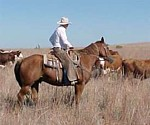

|  | About our stewardship |
|
Texas Ranching Conservancy (TRC) is an education-ordinated social
We believe that by serving as a source for useful information in the field of rangeland ranching, we can in time (hopefully before it's too late) play an important role in preserving what's left of our state's, our country's old-time ranching heritage, culture, and pastoral way of life, and do so for the benefit of present and future generations. As a result of today's rapid loss in number, size, and productivity of our state's, our country's old-time working ranches -- especially the prairie, savanna, and forest types in Texas and southeast states like Louisiana, Georgia, and Florida -- we believe our mission is crucial. Our group welcomes anyone, people from all walks of life, who shares our concern about the future for rangeland ranching, as well as the future of our state's, our country's native rangelands. We are always needing motivated people to help us accomplish our group's mission objectives. If you are interested in becoming a member of our group, and helping us promote our conservancy work, please don't hesitate giving us a holler! Yes, your help would be very much appreciated! | |
|
Back to TRC's index page |
|
|
http://www.texasranchingconservancy.com/abouttrc.html |